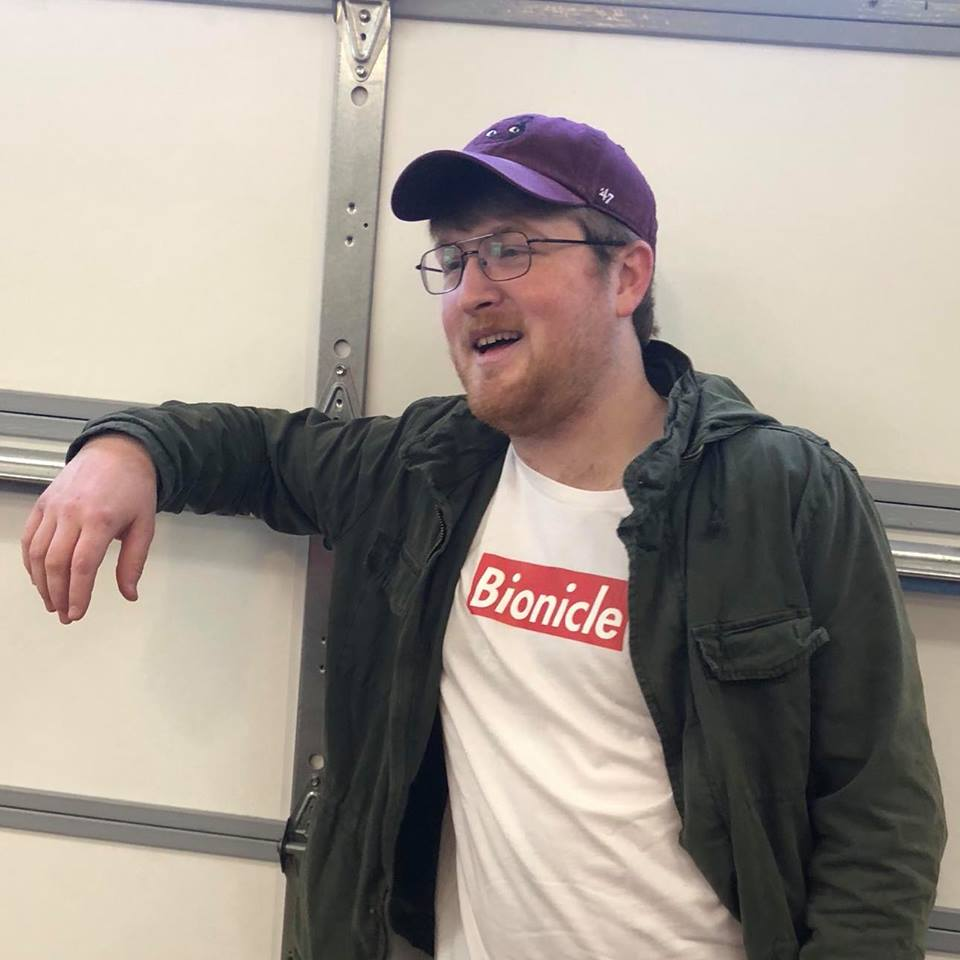

What is TigerDev?
TigerDev is Auburn’s Video Game Development club. TigerDev was founded in 2015 with the goal to provide a community atmosphere focussed around breaking down the barrier between technical skill and your imagination.
What Do We Do?
- Every week we meet to show off our recent work, discuss design philosophy / technique, or to discuss our game of the month (similar to a book club).
- Every semester we form interdisciplinary teams that come together to create fully working games over the course of the semester.
- Multiple times a semester we come together for Game Jams. If you don’t know, game jams are events (like “hackathons”) in which you develop a brand new game during the length of the jam (usually 48 hours). At the beginning of the jam we meet somewhere for the unveiling of the theme and to form groups. At which point you are welcome to stick around and work on your game or go off on your own. We generally have reserved classrooms and free food available for all participants!
Where Do We Meet?
Monday @6pm - Location TBD
How Do I Contact You?
- Email: TigerDev@auburn.edu
- Discord: TigerDev#3018
- Twitter: @Auburn_TigerDev
- Instagram: @Auburn_TigerDev
Officers
President - Connor Lantz
Connor Lantz is a game designer specializing in tech art. Born in Texas and now studying computer science, he's led a handful of projects over three years of experience.
He has worked in every major game engine, in a plethora of developmental roles. Outside of game development, Connor plays French horn in the college band and is a member of the Tau Beta Sigma service sorority.

Vice President - Charles Painter
Charles Painter is an undergraduate studying Software
Engineering and minoring in Creative Writing. He’s a project lead at TigerDev and is interested in game direction, production, and the power of interactive storytelling

Tresurer - ???
Lorem Upsum

Secretary - Keola Silva
Computer geek, game programmer, and resident dork.
I'm a senior in Computer Science and the secretary for TigerDev. I'm extremely passionate about video game development and my strongest roles involve project management, unity, and programming.
www.keolasilva.com/
I'm a senior in Computer Science and the secretary for TigerDev. I'm extremely passionate about video game development and my strongest roles involve project management, unity, and programming.
www.keolasilva.com/
Historian - Holden Wells
Holden Wells is an undergrad Computer Science major doing
everything from front end web developer work to creating game for Tigerdev. He enjoys learning new game dev software such as GameMaker 2 and Unreal Engine.

follow us on